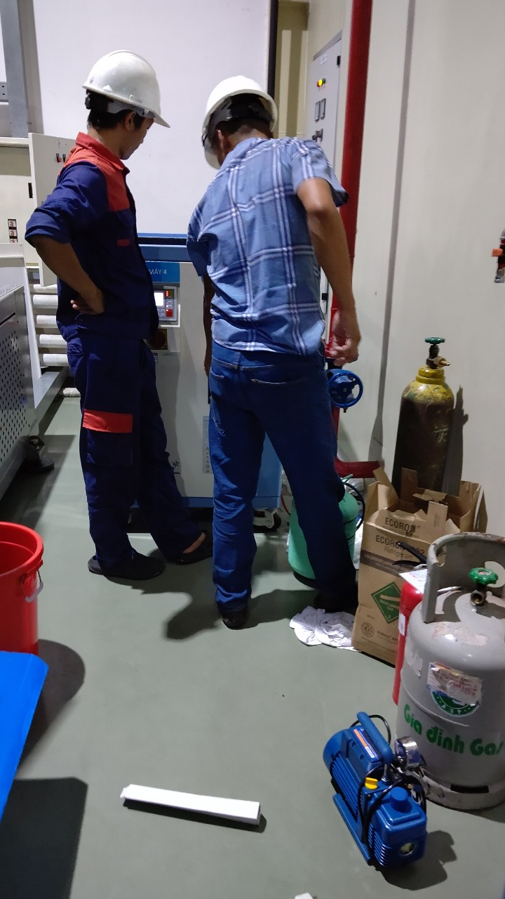

Máy sấy khí là một phần quan trọng trong quá trình sản xuất và hoạt động của nhiều doanh nghiệp. Chúng giúp làm khô khí nén, loại bỏ hơi ẩm và tạo điều kiện hoạt động lý tưởng cho các thiết bị và hệ thống khác. Tuy nhiên, để đảm bảo hiệu suất và sự ổn định của máy sấy khí, bảo trì định kỳ là một yếu tố quan trọng mà nhiều doanh nghiệp thường bỏ qua. Trong bài viết này, chúng ta sẽ tìm hiểu tại sao bảo trì máy sấy khí là một phần quan trọng của hoạt động kinh doanh của bạn.
I.Lợi ích thiết thực mà việc bảo trì định kỳ máy sấy khí mang lại cho hệ thống của bạn

1. Đảm Bảo Hiệu Quả Và Tiết Kiệm Năng Lượng:
Máy sấy khí hoạt động không ngừng để cung cấp khí sạch và khô cho hoạt động sản xuất của bạn.
Tuy nhiên, nếu bỏ qua bảo trì định kỳ, hiệu suất của máy sấy khí có thể suy giảm đáng kể. Dẫn đến lãng phí năng lượng và tăng chi phí hoạt động không cần thiết.
Với việc thực hiện bảo trì định kỳ, bạn sẽ đảm bảo rằng máy sấy khí luôn hoạt động ở mức hiệu suất tối ưu, giúp tiết kiệm năng lượng và giảm chi phí vận hành đáng kể.
Nhấn mạnh rằng bảo trì máy sấy khí không chỉ giúp tăng hiệu suất mà còn mang lại lợi ích tiết kiệm về tài chính cho doanh nghiệp của bạn.
2. Bảo Trì Để Đảm Bảo An Toàn Tuyệt Đối:
Máy sấy khí có khả năng tạo nhiệt độ cao và áp suất lớn trong quá trình hoạt động. Nếu chúng không được bảo trì đúng cách, có thể dẫn đến các sự cố nguy hiểm như vỡ ống, rò rỉ khí, hoặc thậm chí hỏa hoạn.
Bảo trì định kỳ không chỉ là việc bảo vệ sự an toàn của mọi người trong doanh nghiệp của bạn mà còn là cách bảo vệ tài sản quý báu của bạn.
An toàn không chỉ là một trách nhiệm mà còn là một ưu tiên hàng đầu. Vì vậy, chúng ta không thể xem nhẹ bất kỳ khía cạnh nào liên quan đến máy sấy khí mà không thực hiện bảo trì thường xuyên và kỹ lưỡng.
Điều này giúp đảm bảo rằng bạn và đội ngũ của bạn luôn được bảo vệ và an toàn trong môi trường làm việc của mình.
3. Kéo Dài Tuổi Thọ Máy và Tiết Kiệm Chi Phí:
Bảo trì máy sấy khí định kỳ không chỉ giúp cải thiện hiệu suất của máy sấy khí mà còn là cách tối ưu hóa tuổi thọ của nó.
Khi bạn đảm bảo máy được chăm sóc và bảo trì đúng cách, bạn sẽ có khả năng sử dụng máy trong một khoảng thời gian dài hơn. Điều này không chỉ giúp giảm thiểu sự cố và chi phí sửa chữa, mà còn tiết kiệm tiền cho việc thay thế thiết bị mới.
Một máy sấy khí được bảo trì thường xuyên sẽ làm việc ổn định và đáng tin cậy hơn, mang lại giá trị kéo dài cho doanh nghiệp của bạn.
Hãy xem đây như là một đầu tư vào tương lai, không chỉ để tiết kiệm chi phí mà còn để đảm bảo sự liên tục và bền vững cho hoạt động sản xuất của bạn.
4. Giảm Rủi Ro Sự Cố Khẩn Cấp và Bảo Vệ Sản Xuất:
Không ai muốn đối mặt với sự cố không mong muốn liên quan đến máy sấy khí, đặc biệt trong quá trình sản xuất. Những sự cố này có thể dẫn đến gián đoạn trong quy trình sản xuất và gây thiệt hại cho sản phẩm cũng như danh tiếng của doanh nghiệp.
Bằng cách thực hiện bảo trì định kỳ, bạn có thể giảm nguy cơ xuất hiện các sự cố không mong muốn. Điều này đồng nghĩa với việc đảm bảo rằng doanh nghiệp của bạn hoạt động ổn định mà không gặp phải những tình huống khẩn cấp đáng tiếc.
Việc này giúp bảo vệ sản xuất và danh tiếng của bạn, và cùng lúc giảm rủi ro mất mát không cần thiết.
5. Đảm Bảo Tuân Thủ Quy Định An Toàn Với Bảo Trì Thường Xuyên:
Máy sấy khí, khi không được bảo trì đúng cách, có thể tạo ra môi trường không an toàn. Điều này không chỉ đe dọa sức khỏe và an toàn của nhân viên mà còn có thể gây ra các vấn đề liên quan đến tuân thủ quy định an toàn làm việc.
Bằng việc thực hiện bảo trì máy sấy khí định kỳ, bạn có thể đảm bảo rằng doanh nghiệp của bạn luôn tuân thủ mọi quy định an toàn cần thiết. Điều này không chỉ bảo vệ sức khỏe và an toàn của nhân viên mà còn đảm bảo rằng bạn không phải đối diện với các hậu quả pháp lý không mong muốn liên quan đến tuân thủ an toàn làm việc.
Tóm lại: Bảo trì máy sấy khí là bước không thể thiếu trong quá trình sản xuất và hoạt động kinh doanh. Nó đảm bảo hiệu suất tối ưu, an toàn và tuổi thọ của máy, đồng thời giảm nguy cơ sự cố và giúp bạn tuân thủ các quy định hợp pháp. Đầu tư vào bảo trì máy sấy khí mang lại lợi ích lớn cho doanh nghiệp của bạn trong dài hạn.
Nếu bạn cần sự hỗ trợ về bảo trì máy sấy khí hoặc cần tư vấn về các dịch vụ liên quan đến máy móc và thiết bị công nghiệp, hãy liên hệ với chúng tôi để biết thêm thông tin chi tiết.

II. Thời Gian Bảo Trì Máy Sấy Khí :Một Hướng Dẫn Chi Tiết

Bảo trì máy sấy khí
Bảo trì máy sấy khí là một phần quan trọng để duy trì hiệu suất và độ tin cậy của thiết bị. Thời gian bảo dưỡng máy sấy khí có thể biến đổi dựa trên nhiều yếu tố, nhưng dưới đây là một hướng dẫn tổng quan:
1. Bảo Dưỡng Định Kỳ: Bảo dưỡng định kỳ là quan trọng. Thường, bạn nên thực hiện bảo dưỡng hàng năm hoặc theo lịch trình được đề xuất bởi nhà sản xuất máy sấy khí của bạn, dựa trên số giờ hoạt động hoặc thời gian sử dụng.
2. Kiểm Tra Định Kỳ: Kiểm tra định kỳ máy sấy khí có thể được thực hiện hàng tháng hoặc hàng quý để theo dõi hiệu suất của máy, bao gồm việc kiểm tra áp suất làm việc, nhiệt độ và các chỉ số quan trọng khác.
3. Kiểm Tra Trong Trường Hợp Cần Thiết: Ngoài lịch trình định kỳ, bạn nên kiểm tra máy sấy khí ngay khi có dấu hiệu sự cố hoặc mất hiệu suất. Điều này bao gồm tiếng ồn lớn, sự giảm áp suất đột ngột hoặc hỏng hóc của các thành phần quan trọng.
4. Môi Trường Làm Việc: Môi trường làm việc cũng có thể ảnh hưởng đến thời gian bảo dưỡng. Nếu máy sấy khí của bạn hoạt động trong môi trường bẩn hoặc nhiễm bẩn, bạn có thể cần thực hiện bảo dưỡng thường xuyên hơn.
5. Hướng Dẫn Từ Nhà Sản Xuất: Luôn tuân thủ hướng dẫn và lời khuyên từ nhà sản xuất máy sấy khí. Họ thường cung cấp thông tin chi tiết về lịch trình bảo dưỡng và các chỉ số quan trọng cần được theo dõi.
6. Dự Trù Kế Hoạch Bảo Dưỡng: Lên kế hoạch cho việc bảo dưỡng trước, để bạn có thể dễ dàng sắp xếp thời gian và tài nguyên mà không gây gián đoạn quá nhiều trong quá trình sản xuất hoặc hoạt động kinh doanh của bạn.
Nhớ rằng việc bảo dưỡng máy sấy khí đúng lịch trình giúp đảm bảo rằng máy luôn hoạt động hiệu quả và giảm nguy cơ sự cố không mong muốn, đồng thời giúp bạn tiết kiệm năng lượng và giữ chất lượng sản phẩm.
III. Lợi Ích Từ Dịch Vụ Bảo Trì Máy Sấy Khí của Hoàng Gia Điện Lạnh

Khi bạn xem xét về việc bảo trì máy sấy khí, không thể bỏ qua sự hỗ trợ từ các dịch vụ chuyên nghiệp như Hoàng Gia Điện Lạnh. Dưới đây là một số lợi ích cụ thể mà bạn có thể hưởng từ việc sử dụng dịch vụ của chúng tôi:
1. Chuyên Gia Có Kinh Nghiệm: Hoàng Gia Điện Lạnh có đội ngũ kỹ thuật viên có kinh nghiệm rộng lớn trong việc bảo trì và sửa chữa máy sấy khí. Họ hiểu rõ cách hoạt động của máy sấy khí và có kiến thức sâu rộng về các vấn đề tiềm ẩn có thể xảy ra.
2. Lịch Trình Linh Hoạt: Dịch vụ bảo trì của Hoàng Gia Điện Lạnh cung cấp lịch trình linh hoạt, tùy chỉnh để phù hợp với nhu cầu cụ thể của doanh nghiệp bạn. Điều này đảm bảo rằng bạn không phải gián đoạn quá nhiều trong quá trình sản xuất hoặc hoạt động kinh doanh của mình.
3. Sử Dụng Linh Kiện Chất Lượng: Chúng tôi sử dụng linh kiện chính hãng và chất lượng cao cho việc bảo trì máy sấy khí. Điều này đảm bảo rằng thiết bị của bạn sẽ được sửa chữa và duy trì bằng cách tốt nhất, gia tăng độ bền và độ tin cậy.
4. Dịch Vụ Ưu Đãi: Thường xuyên, Lộc Thiên Phát có thể cung cấp các ưu đãi và gói dịch vụ hấp dẫn cho khách hàng định kỳ của chúng tôi. Điều này có thể giúp bạn tiết kiệm chi phí trong dài hạn và đảm bảo rằng bạn luôn nhận được sự hỗ trợ tốt nhất cho máy sấy khí của bạn.
5. Đảm Bảo Tuân Thủ Quy Định: Hoàng Gia Điện Lạnh đảm bảo rằng các dịch vụ của chúng tôi tuân thủ mọi quy định an toàn và môi trường cần thiết. Điều này giúp bạn tránh xa khỏi các vấn đề pháp lý và bảo vệ sự uy tín của doanh nghiệp .
Tóm lại, việc sử dụng dịch vụ bảo trì máy sấy khí của Hoàng Gia Điện Lạnh không chỉ giúp bạn duy trì và cải thiện hiệu suất máy sấy khí mà còn mang lại nhiều lợi ích khác, giúp doanh nghiệp của bạn hoạt động hiệu quả và có lợi nhuận hơn. Hãy để chúng tôi hỗ trợ bạn trong việc duy trì thiết bị của bạn!
VI. Cách Liên Hệ Với Chúng Tôi Nhanh Nhất
Nếu bạn quan tâm đến việc bảo trì máy sấy khí hoặc cần sự hỗ trợ từ Hoàng Gia Điện Lạnh, dưới đây là cách bạn có thể liên hệ với chúng tôi:
1. Liên hệ ngay hôm nay: Bước đầu tiên là hãy thực hiện cuộc gọi hoặc gửi email đến Hoàng Gia Điện Lạnh để thảo luận về nhu cầu của bạn và lên lịch bảo trì cho máy sấy khí của bạn. Hãy nhớ cung cấp thông tin chi tiết về thiết bị của bạn và bất kỳ vấn đề nào bạn đang gặp phải.
2. Đặt lịch hẹn: Hãy thỏa thuận về lịch trình bảo trì hoặc kiểm tra định kỳ cho máy sấy khí của bạn. Điều này giúp bạn đảm bảo rằng máy sẽ được duyệt trước, và bảo dưỡng đúng lịch trình.
3. Nhận tư vấn: Hãy sử dụng cơ hội này để trao đổi với nhân viên của Lộc Thiên Phát về các cải tiến hoặc nâng cấp có thể được thực hiện để tối ưu hóa hiệu suất máy sấy khí của bạn.
CÔNG TY TNHH KỸ THUẬT ĐIỆN LẠNH HOÀNG GIA
Địa chỉ : 49 Lưu Chí Hiếu, P. Rạch Dừa, TP. Vũng Tàu
Mã số thuế ( Tax code) : 3500830244
Điện thoại: ( Tel) : +84.918.092.848
Website:sanpham
Hãy nắm vững thông tin liên hệ này và đừng ngần ngại liên hệ với họ để bàn bạc và bắt đầu quá trình bảo trì hoặc kiểm tra máy sấy khí của bạn. Đội ngũ của Lộc Thiên Phát sẽ hỗ trợ bạn trong việc duy trì và cải thiện hiệu suất của thiết bị của bạn.